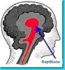

Pensé que había expirado junto al test de Rorschach y al estudio Vicary. Sin embargo, el siglo XXI lo ha traído de vuelta vestido de instinto y ubicado en el cerebro reptiliano. La neurología actual ha divorciado al subconsciente de “lo mental” y lo ha enclavado bajo la lupa de la resonancia magnética, otorgándole así el carácter biológico requerido para su estudio. El “makeover” ha dado resultados sugerentes.
La erradicación del subconsciente del estudio científico tuvo sus inicios en aquel famoso fraude de 1957 perpetrado por James Vicary y que introdujo en el vocabulario popular aquello del estímulo subliminal. Vicary reportó un aumento significativo en el consumo de sodas y rositas de maíz en el cine debido a la introducción subliminal de las órdenes “bebe coca-cola” y “come palomitas” durante el programa.
Subliminalmente quiere decir que la persona que percibe el estímulo no lo hace de manera consciente y que, por ende, actuará de acuerdo a lo que dicte su subconsciente. Pero Vicary admitió haber cambiado los resultados a su favor y estudios posteriores no descubrieron ningún efecto entre el subconsciente y conductas impulsadas por un estímulo subliminal.
Ahora las cosas han cambiado, como es lo usual, gracias a los avances tecnológicos.
A pesar de que hay que “caminar sobre huevos” al interpretar lecturas neurológicas extraídas de una resonancia magnética, este aparato, especialmente si es ‘funcional’, ha perfeccionado el conocimiento que tenemos sobre los desempeños del complejo órgano que habita en la azotea del cuerpo humano. A través del rastreo del flujo de sangre, es posible observar las zonas cerebrales activas cuando la persona está realizando una tarea en particular. La neurología actual rebosa de estudios así.
Otras investigaciones también han contribuido en este segundo despertar del subconsciente humano. En un estudio reciente, llevado a cabo por científicos de la Universidad de Yale, los participantes no sabían que sus instintos sociales estarían siendo manipulados. De camino al laboratorio, los estudiantes se encontraban con uno de los asistentes quien llevaba un montón de libros y otros objetos, entre ellos una taza de algo caliente o de algo frío. Los asistentes les pedían que sostuvieran la taza por un momento.
Al llegar al laboratorio, los estudiantes leían sobre una persona hipotética y luego los profesores solicitaban su opinión al respecto. Los que habían sostenido la taza fría respondieron que la pensaron egoísta, poco sociable y fría. Los que sostuvieron la taza caliente opinaron lo contrario.
De la misma forma, una investigación elaborada en el 2004 por un equipo en la Universidad de Stanford descubrió que los voluntarios que jugaban con dinero en la habitación con un maletín sobre la mesa, tendían a ser más avaros que los que lo hacían en el cuarto con una mochila sobre la mesa. “La mera presencia del maletín, que era notada aunque no conscientemente registrada”, argumentan los autores, “generaba en el cerebro asociaciones y expectativas de negocios, esto lo lleva a activar el programa neuronal más eficaz para la situación: competir”.
El proceso ocurre desde abajo hacia arriba, algo que tiene sentido evolutivo en lo que a cerebros se refiere. Aunque aún desconocemos dónde se encuentra la consciencia humana, la mayoría de los neurólogos está de acuerdo en que la corteza prefrontal goza de cierta responsabilidad en el asunto; esta capa se encuentra en el tope cerebral y es de las últimas en formarse. Por otro lado, el subconsciente, cuya actividad ha sido observada en el Pallidum ventral, que se encuentra en lo que es conocido como el cerebro reptiliano, está situado en las profundidades neuronales y trabaja impulsando los instintos, esos que nos ayudan a sobrevivir y que fueron, por necesidad obvia, los primeros en desarrollarse.
“Cuando tomamos una decisión, el proceso comienza abajo y continúa hacia arriba. Las metas subconscientes, en este sentido, pueden ser vistas como agentes adaptativos abiertos que actúan de parte de objetivos mucho más amplios y que han sido genéticamente codificados; en otras palabras, un sistema automático de supervivencia”, explicó John A. Bargh, profesor de psicología de la Universidad de Yale y uno de los autores del estudio de la taza caliente.

¿Quiere esto decir que estímulos de los que no estoy consciente pueden controlar mi conducta? Por supuesto que no; y aunque el tema no está mal para la ciencia ficción, la realidad, como siempre, es otra.
Ciertos olores, sabores, sonidos y palabras despiertan programas distintos en el cerebro, desde aspectos de nuestra memoria hasta las emociones más íntimas. Así también tocan las puertas de nuestros instintos y activan programas que comienzan su escalada hasta la corteza prefrontal, donde tomamos las últimas decisiones. Es probable que una taza de café caliente entre mis manos brinde momentánea calidez a mi visión general sobre un individuo hipotético, pero ni el ambiente más íntimo, chocolate humeante y parpadeante chimenea incluidos, entibiará mis impresiones ante una imagen de Dick Cheney, por ejemplo.
El proyecto implícito
Actuar antes de pensar
¿Y si una prueba sugiriera que su tan liberal cerebro es instintivamente racista? Pues ha sido un tema muy comentado en el laboratorio de Tierney, del New York Times (http://www.nytimes.com/2008/11/18/science/18tier.html?ref=science). Se trata de la Prueba de Asociación Implícita, IAT son sus siglas en inglés (https://implicit.harvard.edu/implicit/), un conjunto de exámenes usado durante años por científicos en las universidades de Harvard, Yale, Virginia y Washington, entre otras, para medir la predisposición o la preferencia de las personas hacia conceptos, razas y hasta el peso de un individuo. Este método ha sido ampliamente criticado por muchos, sin embargo, los autores atestiguan sobre su ya demostrada validez. Las pruebas usan la velocidad de reacción en el tiempo y la coalición de conceptos, entre otras variables, para medir esta predisposición (bias).
En uno de los resultados, muy interesante, por cierto, la prueba descubrió una preferencia entre los doctores de un hospital estadounidense por los pacientes blancos. No obstante, una vez comparada la discriminación con el trato, se observó que mientras más parcialidad mostraban subconscientemente, con más igualdad trataban a todos sus pacientes, no importaba el color.
En otras palabras, el subconsciente no dicta tu conducta.
Yo me he pasado horas realizando algunas de estas pruebas implícitas. Me complació descubrir que muestro una tendencia fuerte y automática de vincular el ateísmo con mi persona, pero fue motivo de preocupación leer que cuando se trata de mosquitos y cucarachas, tiendo a odiar ambos insectos con igual intensidad. Lo que no concuerda con mi aborrecimiento, conscientemente discriminatorio y total, hacia las repugnantes cucarachas.
Volver al índice de la Lupa Herética
© 2008-2021 Glenys Álvarez y Sin Dioses. Prohibida la reproducción con fines comerciales.
Comentarios
Comments powered by Disqus